扫码加微信

18729585100
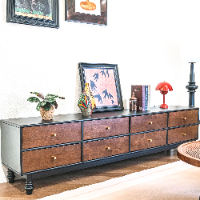
可移动家用实木小推车沙发边藤编小茶几客厅法式复古复古小推车
🔥 已售 771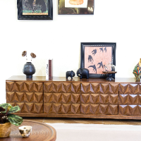
中古风可移动多功能实木小推车沙发茶几边柜床头收纳置物架餐车
🔥 已售 28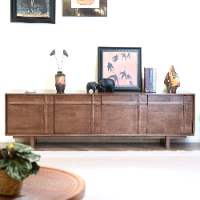
圆形家用客厅轻奢小型茶几简约高档设计师实用2025大气茶几实木
🔥 已售 14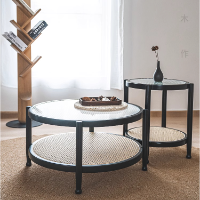
实用圆形家用轻奢玻璃茶几高端大气简约客厅家具高档实木玻璃
🔥 已售 3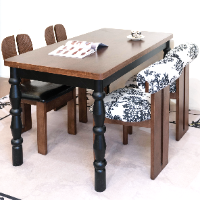
客厅茶几餐边柜美式中古风实木置物家用主卧柜子储物柜收纳柜
🔥 已售 3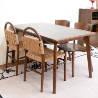
双层圆桌茶几中古风茶几法式圆形简约大气家用客厅茶几高档桌子
🔥 已售 2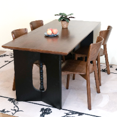
收纳储物复古中古风茶几圆形家用客厅设计中式法式茶几圆桌中古风
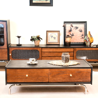
家用法式茶几木柜子轻奢中古风茶几客厅置物收纳柜简约储物柜茶几
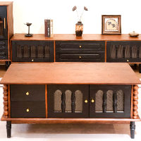
茶几客厅中古风置物储藏复古餐边柜法式电茶几收纳柜中古风茶几
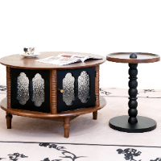
客厅简约圆桌中古风圆形收纳储物茶几创意家用可储物中古风茶几
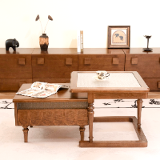
设计拼接茶几方几正方形长方形复古可移动中古风茶几可收纳茶几
扫码加微信
18729585100